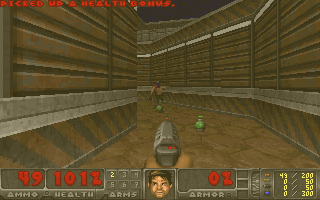

An experiment in how far MCP Apps can go. DOOM already runs on a server as WebAssembly and a model can play it through MCP tool calls. Next: the game inside ChatGPT, steered by your voice.

inline MCP Appdoomgeneric → WebAssembly, 380 KB. Frozen between calls, replayed from its input log.
Illustration. The frame, distance and angle are real output from the engine (Freedoom E1M1); the Mac and ChatGPT window around them are a mock-up.
DOOM runs at 35 tics a second; a chat model thinks in seconds. So the game is frozen between tool calls, and every call advances an exact number of tics.
"Go through the door on the left and kill the imp." The model turns intent into game actions.
doom_act, doom_turn or doom_observe on an MCP server over Streamable HTTP.
It rebuilds the session from its input log, applies the steps, then freezes the game again.
A screenshot, structured state, or both, back to the model. The inline viewer updates in the chat.
Built on doomgeneric compiled to WebAssembly, Next.js on Vercel and Upstash Redis.
The engine's clock only advances on a tool call. The model can take as long as it likes to think, and nothing happens behind its back.
Serverless functions don't keep a game in memory. A session is just its list of inputs; any instance rebuilds the exact game by replaying it, like a classic .lmp demo.
Inputs go straight into DOOM's per-tic command through a 3-line patch, so "turn 37.5° right" is exact. Aiming by an enemy's relative angle just works.
Each action returns a 640×400 screenshot, structured state (enemies with distance, angle and an in-crosshair flag), or both. We want to compare how each plays.
Production numbers timed from a laptop on 12 Nov 2026, over 41-call scripted bot runs. Worst case is a cold start on the first call, about 2.1 s.
doom_new_game | Starts a game and opens the inline viewer. |
doom_act | Holds actions for a number of tics, up to 8 steps per call, with an optional caption. |
doom_turn | Turns by exact degrees, the same convention as enemy angles. |
doom_observe | Looks without letting time pass. |
doom_frame | For the viewer only, hidden from the model. Polls the latest frame and captions. |
{
"status": "alive", "health": 87, "weapon": "pistol",
"ammo": 42, "kills": "3/29",
"enemies": [{ "type": "imp", "distance": 412,
"angle": -12.5, "in_crosshair": false }],
"events": ["took 8 damage from 30° left",
"killed 1 enemy"],
"hint": "Nearest enemy is 12° left; doom_turn by its angle to aim."
}
MCP Apps landed in ChatGPT not long ago and more recently in Claude. A fast, visual, real-time-ish game is a good way to find out what they can really do.
Can a live game view run inside the chat in both ChatGPT and Claude, given each host's sandboxing and CSP rules?
Can you direct the game out loud, through ChatGPT voice or dictation, and have the model turn intent into precise actions fast enough to be fun?
Does the model play better from pixels, from structured state, or from both?
How far does a model get before per-turn tool-call limits stop a run?
Remote MCP over Streamable HTTP, no sign-in: https://doom-player.vercel.app/api/mcp
@ in a new chat to pick it.claude mcp add --transport http doom https://doom-player.vercel.app/api/mcp